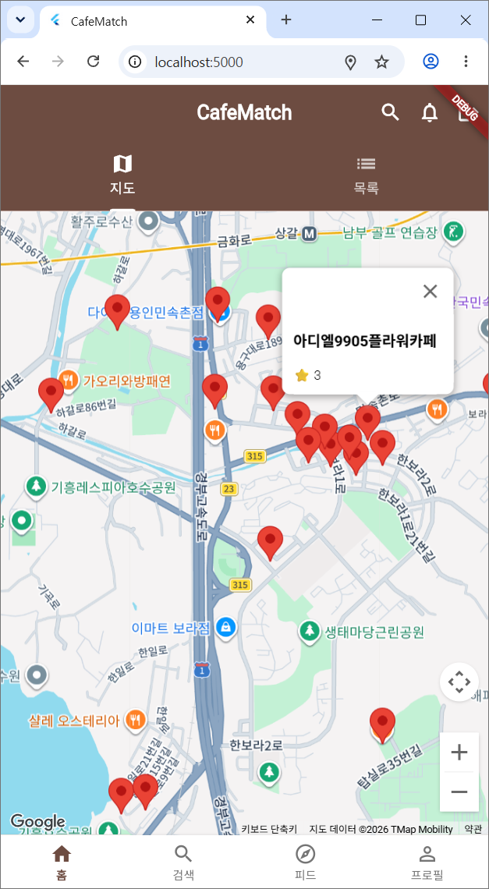
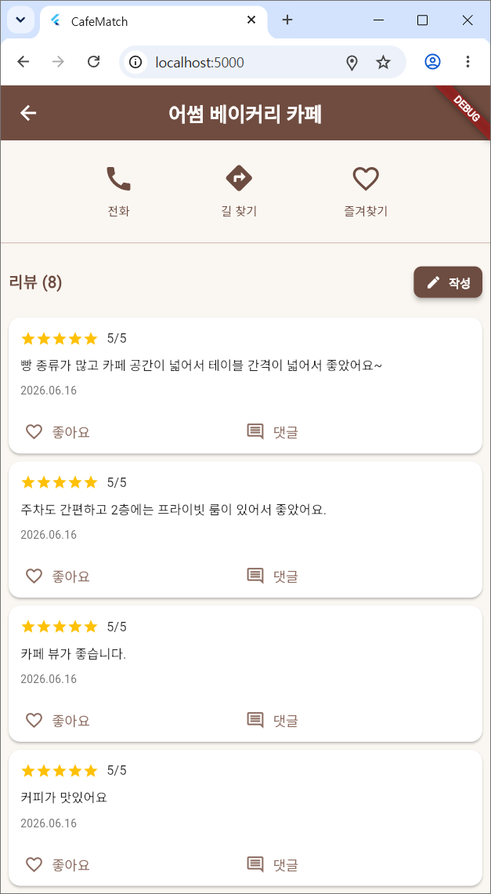
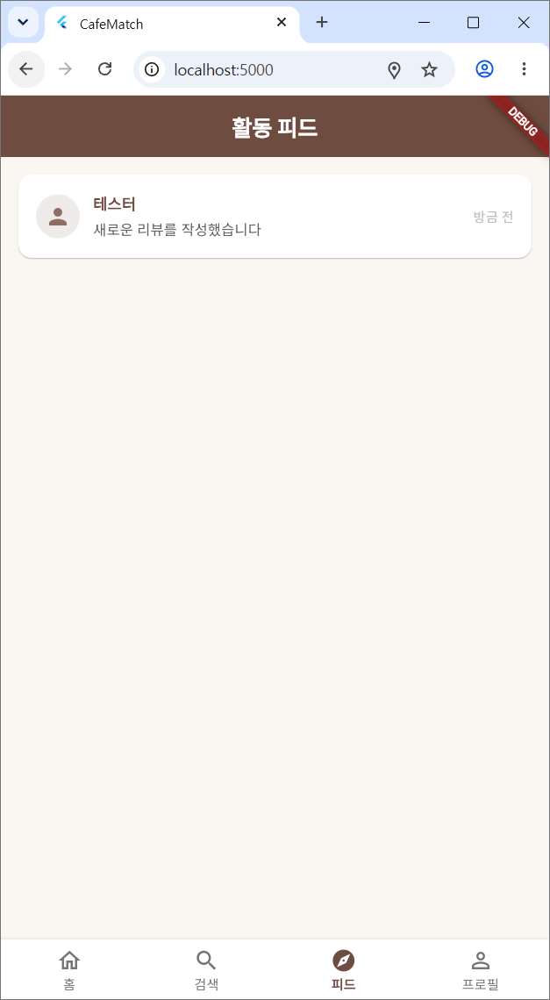

VibeCoding · 최종 발표
CafeMatch ☕
취향으로 연결되는 위치 기반 카페 커뮤니티
Flutter · Firebase · Clean Architecture | v1.2.0
VISION
비전 제시
한 문장 비전
“내 주변의 좋은 카페를, 취향이 맞는 사람들 과 함께 발견한다.”
지향점
단순 지도 검색을 넘어 리뷰·팔로우·피드 로 이어지는 커뮤니티
위치 기반 발견 + 신뢰할 수 있는 사용자 리뷰
모바일·웹 모두에서 동작하는 크로스플랫폼
PROBLEM
문제 정의
사용자의 고충
“내 주변 괜찮은 카페 를 빠르게 찾기 어렵다”
포털 리뷰는 광고·신뢰성 문제가 있다
취향이 비슷한 사람의 추천을 이어보기 어렵다
기존 서비스의 한계
지도 앱: 검색은 되지만 커뮤니티가 없음
SNS: 소통은 되지만 위치 기반 발견이 약함
둘을 하나로 잇는 경험의 부재
해결 가설
위치 기반 카페 검색 + 사용자 리뷰 + 팔로우/활동 피드를 하나의 앱 에 결합하면,
“신뢰할 수 있는 발견”이라는 새로운 가치를 만들 수 있다.
PLAN · WBS
프로젝트 계획 — WBS
Phase 핵심 작업 산출물 상태 P1. 지도 & 검색 Google Maps 통합, Naver Place API, 거리/별점 필터, Hive 캐싱 홈 지도 화면 완료 P2. 인증 & 리뷰 Firebase 회원가입/로그인, 리뷰 CRUD, 즐겨찾기 인증·리뷰 시스템 완료 P3. 소셜 & 배포 팔로우, 활동 피드, 댓글, 검색, 프로필, 성능 최적화, 배포 준비 커뮤니티 + 배포 완료
P3는 Step 0~12로 세분화: 도메인 확장 → 데이터/리포지토리 → UseCase → Provider → DI → UI → 스키마/보안 → 최적화 → 배포
PLAN · STACK
기술 스택
프레임워크 · 언어
Flutter 3.11.3 Dart 3.11.3 Material 3
상태관리 · DI
Provider GetIt (DI)
백엔드 (Firebase)
Auth Cloud Firestore Storage Hosting
지도 · 위치 · 데이터
google_maps_flutter geolocator Google Places API (New) Naver Place API
로컬 · 캐시
Hive cached_network_image shimmer
기타
http flutter_dotenv uuid intl
PROGRESS
프로젝트 진행 과정
P1 지도 & 검색 — 지도/검색/필터 UI, Naver API 연동, 오프라인 캐싱 구축P2 인증 & 리뷰 — Firebase 인증, Firestore 리뷰 CRUD, 즐겨찾기P3 소셜 기능 — Follow/Activity/Comment 도메인 → 데이터 → UseCase → Provider → UI 풀스택 구현웹 호환성 안정화 — Firebase 웹 초기화, Provider 스코프, 위치/Places 웹 대응실데이터 연동 — Google Places (New) 기반 실제 주변 카페 표시배포 준비 — Firestore 보안 규칙/인덱스, 빌드, 정책 문서 작성
HOW
구현 방법 설명
모든 기능은 4계층 Clean Architecture 의 동일한 패턴으로 구현됩니다.
UI / Provider →
UseCase →
Repository (추상) →
Repository Impl →
Datasource →
Firebase / API
핵심 패턴
Entity ↔ Model ↔ Mapper 로 도메인/데이터 분리Repository 인터페이스 로 의존성 역전GetIt 로 23개 의존성 주입Provider(ChangeNotifier) 로 상태 관리
예: 팔로우 기능
FollowProvider → FollowUserUseCase
→ FollowRepositoryImpl → FirestoreFollowDatasource
트랜잭션 으로 follower/following 배열 + 활동기록 원자적 갱신
STRUCTURE
앱 구조 설명
lib/
├── presentation/ 화면 · 위젯 · Provider(8)
│ ├── screens/ home · cafe_detail · auth · search
│ │ activity_feed · user_profile
│ └── providers/ Auth · Home · Review · Comment
│ Follow · ActivityFeed · UserProfile · Search
├── application/ UseCases(16) — auth · cafe · review
│ follow · activity · comment
├── domain/ entities · repositories(추상 인터페이스)
│ └── entities/ User · Cafe · Review · Follow · Activity · Comment
├── data/ models · mappers · datasources · repositories(impl)
│ └── datasources/ Firestore* · Naver · GooglePlaces · Hive
├── core/ services(Location, Firebase) · utils
├── config/ app_theme
└── di/ injection.dart (GetIt 등록)
Dart 파일 104개 · 약 8,200줄 · 화면 22개 · Provider 8개 · UseCase 16개
ARCHITECTURE
아키텍처 다이어그램
┌─────────────────────────────────────────────────────────┐
│ PRESENTATION Screens / Widgets / Provider(ChangeNotifier)│
└───────────────▲───────────────────────┬────────────────────┘
│ 상태 구독 │ 호출
┌───────────────┴───────────────────────▼────────────────────┐
│ APPLICATION UseCases (비즈니스 흐름 조합) │
└───────────────▲───────────────────────┬────────────────────┘
│ 인터페이스 │ 위임
┌───────────────┴───────────────────────▼────────────────────┐
│ DOMAIN Entities · Repository(추상) ← 의존성 역전 │
└───────────────▲───────────────────────┬────────────────────┘
│ 구현 │
┌───────────────┴───────────────────────▼────────────────────┐
│ DATA Repository Impl · Mapper · Datasource │
│ ├─ Firebase Auth / Cloud Firestore / Storage │
│ ├─ Google Places API (New) / Naver Place API │
│ └─ Hive (오프라인 캐시) │
└──────────────────────────────────────────────────────────────┘
의존성은 항상 바깥(Data) → 안(Domain) 방향으로만 향함 → 테스트·교체 용이
SETUP
개발 환경 설정
필수 도구
Flutter SDK 3.11.3+ Dart 3.11.3+ Chrome (웹 실행) Firebase 프로젝트 환경변수 .env
NAVER_CLIENT_ID=...
NAVER_CLIENT_SECRET=...
GOOGLE_MAPS_API_KEY=...
실행 절차
# 1) 의존성 설치
flutter pub get
# 2) 환경변수 파일 생성
cp .env.example .env # 키 입력
# 3) 웹 실행
flutter run -d chromeFirebase 설정: web/index.html · lib/main.dart 의 FirebaseOptions / Google Cloud에서 Places API(New)·Identity Toolkit 활성화
INSTALL
GitHub 설치 가이드
# 1) 저장소 클론
git clone https://github.com/<org>/cafematch.git
cd cafematch
# 2) 의존성 설치
flutter pub get
# 3) 환경변수 설정
cp .env.example .env # API 키 입력
# 4) (선택) Firebase 설정 확인
# web/index.html, lib/main.dart 의 firebaseConfig
# 5) 실행
flutter run -d chrome # 웹
flutter run # 연결된 모바일 기기
# 6) 테스트
flutter test트러블슈팅 빠른 참조
회원가입 실패 → Identity Toolkit API 활성화 + 같은 Google 계정으로 콘솔 로그인
피드/리뷰 인덱스 오류 → 콘솔 링크로 복합 인덱스 생성
지도에 카페 없음 → Places API (New) 활성화 + 결제 설정
BUILD · DEPLOY
빌드와 배포 과정
빌드
flutter build web --release
flutter build apk --release
flutter build appbundle --release✓ 웹 릴리스 빌드 성공 (아이콘 트리셰이킹 99% 감소)
배포
# Firebase 보안 규칙 / 인덱스
firebase deploy --only firestore:rules
firebase deploy --only firestore:indexes
# 웹 호스팅
firebase deploy --only hosting
배포 산출물
firebase.json firestore.rules
firestore.indexes.json PRIVACY_POLICY.md
TERMS_OF_SERVICE.md DEPLOYMENT_GUIDE.md
TROUBLESHOOTING
구현 시행착오 사례
증상 원인 해결 웹 회원가입 무한 로딩 identical(0,0.0)로 잘못된 웹 감지kIsWeb으로 교체카페 상세에서 Provider 못 찾음 MultiProvider가 MaterialApp 안 에 위치 MultiProvider를 위로 이동 홈 진입 시 권한 API 오류 location 패키지 웹 미지원geolocator로 교체실제 카페 검색 실패 레거시 PlacesService 신규고객 불가 Places API (New) Place.searchNearby 내 리뷰가 프로필에 없음 리뷰가 userId:''로 저장 FirebaseAuth uid 주입 + 활동 기록 생성 피드/리뷰 쿼리 실패 Firestore 복합 인덱스 부재 복합 인덱스 생성
ADR · Q&A
ADR 요약 (의사결정 기록)
ADR-1 · 4계층 Clean Architecture
결정: Presentation/Application/Domain/Data 분리이유: 테스트·확장·유지보수 용이, 의존성 역전
ADR-2 · 상태관리 Provider + GetIt
결정: ChangeNotifier + DI 컨테이너이유: 러닝커브 낮고 규모에 적합, 위젯트리와 분리된 DI
ADR-3 · 웹 플랫폼 감지 kIsWeb
결정: 플랫폼 분기는 kIsWeb이유: 기존 트릭은 항상 false → 웹 분기 미동작
ADR-4 · 위치 라이브러리 geolocator
결정: location → geolocator이유: 웹 권한 API 호환성
ADR-5 · 카페 데이터 = Google Places (New)
결정: Naver(브라우저 CORS 차단) 대신 Places New이유: 웹에서 직접 호출 가능, 신규고객 지원
ADR-6 · Places 실패 시 Mock 폴백
결정: 예외 시 위치 기준 Mock 데이터이유: 미설정/장애에도 화면이 비지 않음(견고성)
예상 질문: “왜 Naver가 아니라 Google?” / “왜 Provider인가?” / “인덱스는 어떻게 관리?” → 위 ADR로 답변
PERFORMANCE
성능 최적화 노력
렌더링 · 로딩
이미지 캐싱 — cached_network_image (placeholder/error)스켈레톤 UI — shimmer로 체감 로딩 개선const 위젯 적극 사용으로 리빌드 최소화
데이터 · 네트워크
커서 기반 페이지네이션 (Timestamp) — 활동 피드Firestore 복합 인덱스 로 쿼리 최적화Hive 오프라인 캐시 (카페 검색 TTL)트랜잭션 으로 원자적 다중 컬렉션 갱신
웹 릴리스 빌드: MaterialIcons 1.6MB→11KB, CupertinoIcons 257KB→1.4KB (트리셰이킹 99% 감소)
QUALITY
코드 품질 관리
정적 분석 · 컨벤션
flutter analyze 기반 무경고 유지flutter_lints 권장 룰셋 적용레이어별 폴더·네이밍 일관성
구조적 품질
의존성 역전 — 도메인은 외부를 모름
단일 책임 — UseCase 1기능 단위
Entity/Model 분리로 변경 격리
조건부 import로 웹/모바일 코드 분리
TEST
테스트 결과 (단위 / 통합)
단위 테스트
phase3_backend_test.dart
Follow/Activity/Comment Entity 생성·copyWith
Model ↔ JSON 직렬화/역직렬화Mapper 도메인 변환 (ActivityType enum 매핑 포함)
기능/로직 테스트
step7_8_feature_test.dart
SearchProvider — 빈쿼리/이름/이메일 필터
팔로우 토글·카운트 로직
활동 피드 정렬·페이지네이션 규칙
실행
flutter test✓ 단위·로직 테스트 통과 (엔티티/모델/매퍼/Provider 로직 검증)
위젯 스모크 테스트(widget_test.dart) 포함 · 통합 시나리오는 실기기 수동 검증으로 보완
IMPACT
활용 방안 및 기대 효과
활용 방안
일반 사용자 — 내 주변 카페 발견 + 신뢰 리뷰카페 탐방가 — 방문 기록·팔로워와 큐레이션 공유소상공인 — 실사용자 리뷰 기반 노출
기대 효과
광고가 아닌 사람 기반 추천 신뢰도 향상
리뷰·팔로우가 만드는 재방문(리텐션)
지역 상권 발견성 증가
확장 가능성
실시간 알림(FCM) 소셜 로그인 테마/취향 추천 사진 업로드
DEMO · OVERVIEW
시연 데모 — 앱 형태 & 기능
화면 구성 (하단 네비게이션)
🏠 홈 — 지도 + 내 주변 카페 마커
🔍 검색 — 사용자 검색
📰 피드 — 팔로잉 활동 타임라인
👤 프로필 — 내 리뷰 · 활동 · 팔로워
핵심 기능
회원가입 / 로그인 (Firebase Auth)
실제 카페 검색 (Google Places New)
리뷰 작성 · 좋아요 · 댓글
팔로우 / 언팔로우 · 활동 피드
🎬 시연 영상
브라우저가 video 태그를 지원하지 않습니다.
영상 다운로드
DEMO · SCENARIO
사용자 시나리오 기반 시연
가입/로그인 — 이메일로 가입 → 홈 진입발견 — 위치 권한 허용 → 지도가 내 위치로 이동, 주변 실제 카페 마커 표시탐색 — 마커 탭 → 카페 상세 (정보·리뷰)기록 — 별점·리뷰 작성 → 즉시 목록 반영, 활동 기록 생성연결 — 다른 사용자 검색 → 팔로우소통 — 피드에서 팔로잉 활동 확인, 리뷰에 댓글회고 — 프로필에서 내 리뷰·활동 타임라인 확인
DEMO · HIGHLIGHT
임팩트 있는 데모 장면
🎯 “내 위치로 슉”

위치 허용 즉시 지도가 내 위치 로 애니메이션 이동하며 주변 실제 카페 가 마커로 채워짐
⭐ “쓰자마자 반영”

리뷰 작성 → 카페 상세와 프로필 활동 탭 에 즉시 등장 (낙관적 UI)
📰 “팔로우의 연결”

팔로우한 사용자의 활동이 피드 타임라인 에 실시간으로 흐름
AI-NATIVE · WORKFLOW
AI 활용 개발 워크플로우 & 나만의 지식 운영
🤖 AI Agent · 스킬 · 워크플로우
AI 에이전트(Claude Code)로 설계·구현·디버깅·문서화 를 일관 수행
스킬·서브에이전트 로 반복 작업 자동화Plan → 구현 → run(실행) → 리뷰 워크플로우로 품질 확보
🧩 나만의 기법 — 단일 MD 통합
agent · skills · rules · commands · AGENTS.md 를 하나의 .md로 통합설정·규칙·명령을 한 파일에서 버전관리
→ 일관성·재현성·이식성 확보 (환경 갈아타도 동일하게 동작)
📚 최신 LLM Wiki 기반 암묵지 운영
파일 기반 메모리를 개인 위키 로 운영 (분류 · [[링크]] · 자동 회수)
노하우를 증상 → 원인 → 원칙 으로 압축 축적
매 세션 자동 로드 → 반복 실수 방지, 의사결정 가속
핵심: 도구를 쓰는 데서 그치지 않고, AI 협업 방식 자체를 자산화 했다 —
워크플로우는 표준화하고, 설정은 단일 MD로 통합하고, 지식은 위키로 축적해 다음 프로젝트로 그대로 이어진다.
CLOSING
마무리 & 향후 발전 방향
성과 요약
3개 Phase 완주 — 지도/인증/소셜 풀스택
4계층 Clean Architecture로 견고한 구조
웹·모바일 크로스플랫폼 동작
실데이터(Google Places) 연동 + 견고한 폴백
향후 발전
FCM 실시간 알림 · 채팅
취향 기반 추천(개인화) 고도화
Naver 백엔드 프록시(Cloud Functions)로 국내 데이터 보강
사진 업로드 · 소셜 로그인
Crashlytics · Analytics 운영 모니터링
감사합니다 ☕ Q & A